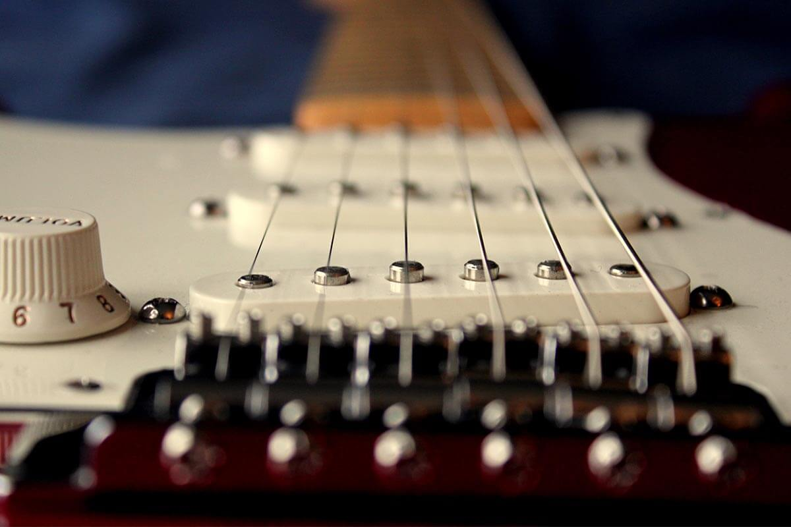
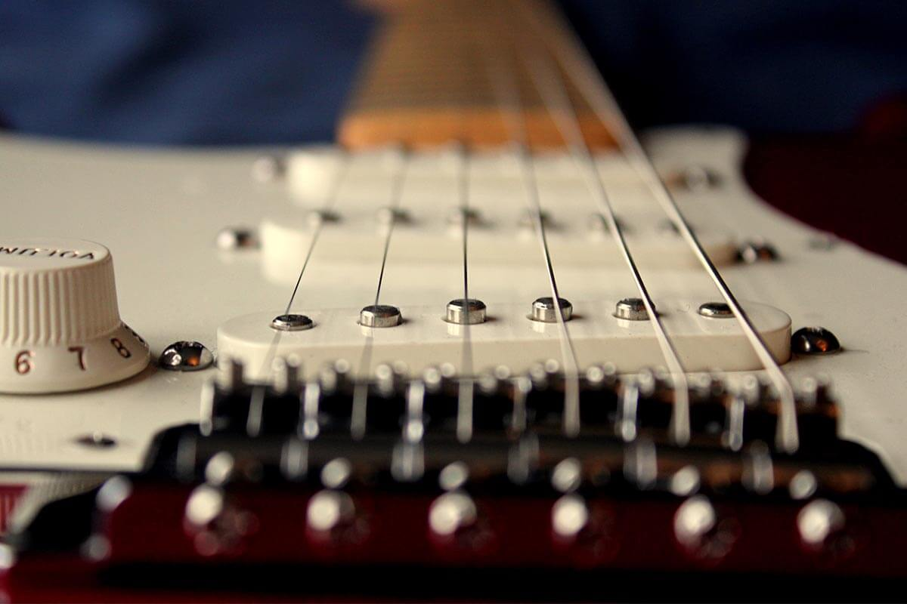

Red Hot Chili Peppers is an American funk rock and alternative rock band from Los Angeles, California. Since its formation, the band has sold more than 85 million copies worldwide, was inducted into the Rock and Roll Hall of Fame and has won seven Grammy Awards over a career spanning more than thirty years.
Its origin dates back to Fairfax High School where they called themselves Anthym and where they had Anthony Kiedis as their presenter. Thanks to this, the band was called to be the opening act for Neighbour's Voice, for which occasion they changed their name to Tony Flow and the Miraculously Majestic Master of Mayhem. They made a very good presentation, so they were called again, although this time with the definitive name of Red Hot Chili Peppers. Thus began a series of presentations in which they became famous for playing naked, although with socks on their genitals, until they signed with the EMI record label. At that time, two of the members joined the band What Is This ?, for which Cliff Martinez and Jack Sherman were recruited. With this line-up and with the help of Andy Gill, the band released their debut album, The Red Hot Chili Peppers, in 1984, although with little success and little recognition for the band despite its half a million copies sold. After a promotional tour and the replacement of Sherman by Slovak again, the band released the following year Freaky Styley with little more success than their previous work. And it is that the consolidation process of the group would be slow, having as the first step the publication of their album The Uplift Mofo Party Plan in 1987, which placed them in position 148 on the Billboard Hot 200 with 750,000 copies sold. However, by that time the band was in a bad state, as several of its members became addicted to drugs and one of them, Hillel Slovak, died in 1988 from heroin. After this, Kiedis left the city where they were to go to Mexico in a detoxification process and Jack Irons withdrew from the group.
After hiring and firing drummer D.H. Peligro and guitarist DeWayne "Blackbyrd" McKnight, the band hired Chad Smith and John Frusciante to record Mother's Milk in 1989, an album that sold three and a half million copies and whose song Knock Me Down, dedicated to Hillel Slovak, was positioned in the first ten positions of the list of the rock of the moment. After climbing another bit on their way to stardom, the band signed to the Warner Bros. record label and released Blood Sugar Sex Magik in 1991, which, thanks to the freedom given them by producer Rick Rubin, earned themnot only a great commercial success, selling more than 15 million copies and taking the song Under the Bride to second place on the Billboard Hot 100, it also earned them critical acclaim, winning the Grammy for best hard rock song for Give It Away and positioning the album at number 310 of the best 500 albums in history according to Rolling Stone magazine.
After Frusciante resigned and was replaced by Dave Navarro, the band made a memorable presentation at Woodstock 94 and the following year recorded their album One Hot Minute which, due to its multiple experimentations, and despite its eight million sales, did not it was completely well received by the public and by critics in general. After this, the other members advised Dave to leave the band due to his drug problems, to which he agreed and suggested that he be replaced by Frusciante again; and so it was done. In this way, and after arduous creative work with Rubin as producer again, the band released what would be their great success, Californication, which was well received by critics and audiences, placing several songs in the first Billboard rankings and was certified multi-platinum five times for his more than 16 million records sold.
Three years after their great success, the band published By the Way, with which they achieved two MTV Europe Music Awards, one MTV Video Music Awards Latin America and more than 12 million copies around the globe. After releasing the Live at Slane Castle DVD and producing their first live album, Live in Hyde Park, Chili Peppers released Stadium Arcadium in 2006, ranking three songs in a row at No. 1 on the Billboard Modern Rock Chart. Thus, they embarked on a two-year tour and then took a long break. At the end of 2009, and after being nominated to enter the Rock Hall of Fame and not achieving it, John Frusciante left the band for the second time, for which he was replaced by Josh Kilighoffer. Finally, the band released I'm With You in 2011 and they were inducted into the Rock Hall of Fame. They then went on a tour in 2014 including several cities in Latin America as a destination and published The Getaway in 2016, for which they published four singles. Currently, the band is still active.
| Song | Original Release | Year | ⭐ |
|---|---|---|---|
| Baby Appeal | The Red Hot Chili Peppers | 1984 | |
| Buckle Down | The Red Hot Chili Peppers | 1984 | |
| Get Up and Jump | The Red Hot Chili Peppers | 1984 | |
| Grand Pappy du Plenty | The Red Hot Chili Peppers | 1984 | |
| Green Heaven | The Red Hot Chili Peppers | 1984 | |
| Mommy Where's Daddy | The Red Hot Chili Peppers | 1984 | |
| Out in L.A. | The Red Hot Chili Peppers | 1984 | |
| Police Helicopter | The Red Hot Chili Peppers | 1984 | |
| True Men Don't Kill Coyotes | The Red Hot Chili Peppers | 1984 | |
| Why Don't You Love Me (Hank Williams cover) | The Red Hot Chili Peppers | 1984 | |
| You Always Sing the Same | The Red Hot Chili Peppers | 1984 | |
| American Ghost Dance | Freaky Styley | 1985 | |
| Battleship | Freaky Styley | 1985 | |
| Blackeyed Blonde | Freaky Styley | 1985 | |
| The Brothers Cup | Freaky Styley | 1985 | |
| Catholic School Girls Rule | Freaky Styley | 1985 | |
| Freaky Styley | Freaky Styley | 1985 | |
| Hollywood (Africa) (The Meters cover) | Freaky Styley | 1985 | |
| If You Want Me To Stay (Sly and the Family Stone cover) | Freaky Styley | 1985 | |
| Jungle Man | Freaky Styley | 1985 | |
| Lovin' and Touchin | Freaky Styley | 1985 | |
| Nevermind | Freaky Styley | 1985 | |
| Sex Rap | Freaky Styley | 1985 | |
| Thirty Dirty Birds | Freaky Styley | 1985 | |
| Yertle th Turtle | Freaky Styley | 1985 | |
| Backwoods | The Uplift Mofo Party Plan | 1987 | |
| Behind the Sun | The Uplift Mofo Party Plan | 1987 | |
| Fight Like A Brave | The Uplift Mofo Party Plan | 1987 | |
| Funky Crime | The Uplift Mofo Party Plan | 1987 | |
| Love Trilogy | The Uplift Mofo Party Plan | 1987 | |
| Me and My Friends | The Uplift Mofo Party Plan | 1987 | |
| No Chump Love Sucker | The Uplift Mofo Party Plan | 1987 | |
| Organica Anti-Beat Box Band | The Uplift Mofo Party Plan | 1987 | |
| Party on Your Pussy | The Uplift Mofo Party Plan | 1987 | |
| Skinny Swety Man | The Uplift Mofo Party Plan | 1987 | |
| Subterranean Homesick Blues (Bob Dylan cover) | The Uplift Mofo Party Plan | 1987 | |
| Walkin' on Down the Road | The Uplift Mofo Party Plan | 1987 | |
| Fire (Jimi Hendrix cover) | Mother's Milk | 1989 | |
| Good Time Boys | Mother's Milk | 1989 | |
| Higher Ground (Stevie Wonder cover) | Mother's Milk | 1989 | |
| Johnny, Kick a Hole in the Sky | Mother's Milk | 1989 | |
| Knock Me Down | Mother's Milk | 1989 | |
| Magic Johnson | Mother's Milk | 1989 | |
| Millionaires Against Hunger | B-side of "Higher Ground" | 1989 | |
| Nobody Weird Like Me | Mother's Milk | 1989 | |
| Politician (Mini Rap) | B-side of "Higher Ground" | 1989 | |
| Pretty Little Ditty | Mother's Milk | 1989 | |
| Punk Rock Classic | Mother's Milk | 1989 | |
| Sexy Mexican Maid | Mother's Milk | 1989 | |
| Stone Cold Bush | Mother's Milk | 1989 | |
| Subway Venus | Mother's Milk | 1989 | |
| Taste the Pain | Mother's Milk | 1989 | |
| Shoe Me Your Soul | Pretty Woman (soundtrack) | 1990 | |
| Apache Rose Peacock | Blood Sugar Sex Magik | 1991 | |
| Blood Sugar Sex Magik | Blood Sugar Sex Magik | 1991 | |
| Breaking the Girl | Blood Sugar Sex Magik | 1991 | |
| Funky Monks | Blood Sugar Sex Magik | 1991 | |
| Give It Away | Blood Sugar Sex Magik | 1991 | |
| The Greeting Song | Blood Sugar Sex Magik | 1991 | |
| I Could Have Lied | Blood Sugar Sex Magik | 1991 | |
| If You Have to Ask | Blood Sugar Sex Magik | 1991 | |
| Mellowship Slinky in B Major | Blood Sugar Sex Magik | 1991 | |
| My Lovely Man | Blood Sugar Sex Magik | 1991 | |
| Naked in the Rain | Blood Sugar Sex Magik | 1991 | |
| The Power od Equality | Blood Sugar Sex Magik | 1991 | |
| The Righteous & the Wicked | Blood Sugar Sex Magik | 1991 | |
| Search and Destroy (The Stooges cover) | B-side of "Give It Away" | 1991 | |
| Sir Psycho Sexy | Blood Sugar Sex Magik | 1991 | |
| Suck My Kiss | Blood Sugar Sex Magik | 1991 | ⭐ |
| They're Red Hot (Robert Johnson cover) | Blood Sugar Sex Magik | 1991 | |
| Under the Bridge | Blood Sugar Sex Magik | 1991 | |
| Fela's Cock | B-side of "Breaking the Girl" | 1992 | |
| Sikamikanico | B-side of "Under the Bridge" | 1992 | |
| Soul to Squeeze | Coneheads (soundtrack) | 1993 | |
| Blues for Meister | Out in L.A. | 1994 | |
| Castles Made of Sand (Jimi Hendrix cover) | Out in L.A. | 1994 | |
| Deck the Halls | Out in L.A. | 1994 | |
| Flea Fly | Out in L.A. | 1994 | |
| F.U. (Thelonious Monk cover) | Out in L.A. | 1994 | |
| Stranded | Out in L.A. | 1994 | |
| What It Is | Out in L.A. | 1994 | |
| Aeroplane | One Hot Minute | 1995 | |
| Coffee Shop | One Hot Minute | 1995 | |
| Deep Kick | One Hot Minute | 1995 | |
| Falling into Grace | One Hot Minute | 1995 | |
| I Found Out (John Lennon cover) | Working Class Hero: A Tribute to John Lennon | 1995 | |
| Let's Make Evil | B-side of "My Friends" | 1995 | |
| Melancholy Mechanics | B-side of "Warped" | 1995 | |
| My Friends | One Hot Minute | 1995 | |
| One Big Mob | One Hot Minute | 1995 | |
| One Hot Minute | One Hot Minute | 1995 | |
| Pea | One Hot Minute | 1995 | |
| Shallow Be Thy Game | One Hot Minute | 1995 | |
| Stretch | B-side of "My Friends" | 1995 | |
| Suffreagette City (David Bowie cover) | B-side of "Aeroplane"(limited edition single | 1995 | |
| Tearjerker | One Hot Minute | 1995 | |
| Transcending | One Hot Minute | 1995 | |
| Walkabout | One Hot Minute | 1995 | |
| Warped | One Hot Minute | 1995 | |
| Love Rollercoaster (Ohio Players cover) | Beavis and Butt-Head Do America | 1996 | |
| Dr. Funkenstein (Parliament cover) | Under the Covers: Essential Red Hot Chili Peppers | 1998 | |
| Tiny Dancer (Elton John cover) | Under the Covers: Essential Red Hot Chili Peppers | 1998 | |
| Around the World | Californication | 1999 | |
| Californication | Californication | 1999 | ⭐ |
| Easily | Californication | 1999 | |
| Emit Remmus | Californication | 1999 | |
| Get on Top | Californication | 1999 | |
| Gong Li | B-side of "Scar Tissue" | 1999 | |
| I Like Dirt | Californication | 1999 | |
| Instrumental #1 | B-side of "Scar Tissue" | 1999 | |
| Instrumental #2 | Californication (Australian edition) | 1999 | |
| Otherside | Californication | 1999 | ⭐ |
| Parallel Universe | Californication | 1999 | |
| Porcelain | Californication | 1999 | |
| Purple Stain | Californication | 1999 | |
| Right on Time | Californication | 1999 | |
| Road Trippin | Californication | 1999 | |
| Savior | Californication | 1999 | |
| Scar Tissue | Californication | 1999 | ⭐ |
| Taetro Jam | B-side of "Around the World" | 1999 | |
| This Velvet Glove | Californication | 1999 | |
| Yertle Trilogy | B-side of "Around the World" | 1999 | |
| End of Show Brisbane | B-side of "Californication" | 2000 | |
| End of Show State College | B-side of "Californication" | 2000 | |
| How Strong | B-side of "Otherside" | 2000 | |
| Body of Water | B-side of "The Zephyr Song" (CD1) | 2002 | |
| By the Way | By the Way | 2002 | ⭐ |
| Cabron | By the Way | 2002 | |
| Can't Stop | By the Way | 2002 | ⭐ |
| Christchurch Fireworks Music | B-side of "Can't Stop" | 2002 | |
| Don't Forget Me | By the Way | 2002 | |
| Dosed | By the Way | 2002 | |
| I Could Die for You | By the Way | 2002 | |
| Midnight | By the Way | 2002 | |
| Minor Thing | By the Way | 2002 | |
| On Mercury | By the Way | 2002 | |
| Out of Range | B-side of "The Zephyr Song" (CD2) | 2002 | |
| Rivers of Avalon | B-side of "The Zephyr Song" (CD2) | 2002 | |
| Slowly Deeply | B-side of "Universally Speaking" | 2002 | |
| Someone | B-side of "The Zephyr Song" (CD1) | 2002 | |
| Tear | By the Way | 2002 | |
| Teenager in Love (Dion and the Belmonts cover) | B-side of "By the Way" | 2002 | |
| This is the Place | By the Way | 2002 | |
| Throw Away your Television | By the Way | 2002 | |
| Time | B-side of "By the Way" | 2002 | |
| Universally Speaking | By the Way | 2002 | |
| Venice Queen | By the Way | 2002 | |
| Warm Tape | By the Way | 2002 | |
| What Is Soul? (Funkadelic cover) | B-side of "By the Way" (CD2) | 2002 | |
| The Zephyr Song | By the Way | 2002 | |
| Bunker Hill | B-side of "Fortune Faded" (CD1) | 2003 | |
| Crosstown Traffic (Jimi Hendrix cover) | Mother's Mil (2003 remastered edition) | 2003 | |
| Eskimo | B-side of "Fortune Faded" (CD1) | 2003 | |
| Fortune Faded | Greatest Hits | 2003 | |
| Havana Affair (Ramones cover) | We're a Happy Family: A Tribute to Ramones | 2003 | |
| Nothing to Lose | B-side of "Can't Stop" | 2003 | |
| Salute to Kareem (demo) | Mother's Milk (2003 remastered edition) | 2003 | |
| Save the Population | Greatest Hits | 2003 | |
| Song That Made Us What We Are Today (demo) | Mother's Milk (2003 remastered edition) | 2003 | |
| Tuesday Night in Berlin | B-side of "Fortune Faded" (CD2) | 2003 | |
| Black Cross (45 Grave cover) | Live in Hyde Park | 2004 | |
| Brandy (Looking Glass cover) | Live in Hyde Park | 2004 | |
| Drum Homage Medley | Live in Hyde Park | 2004 | |
| Flea's Trumpet Treated by John | Live in Hyde Park | 2004 | |
| I Feel Love (Donna Summer cover) | Live in Hyde Park | 2004 | |
| Leverage of Space | Live in Hyde Park | 2004 | |
| Rolling Sly Stone | Live in Hyde Park | 2004 | |
| 21st Century | Stadium Arcadium | 2006 | |
| Animal Bar | Stadium Arcadium | 2006 | |
| Beverly Hills (Circle Jerks cover) | The Bridge School Collection, Vol. 1 | 2006 | |
| Bicycle Song | By the Way (deluxe edition) | 2006 | |
| Bob | One Hot Minute (deluxe edition) | 2006 | |
| C'mon Girl | Stadium Arcadium | 2006 | |
| A Certain Someone | B-side of "Tell Me Baby" (CD1) | 2006 | |
| Charlie | Stadium Arcadium | 2006 | |
| Dani California | Stadium Arcadium | 2006 | ⭐ |
| Death of a Martian | Stadium Arcadium | 2006 | |
| Desecration Smile | Stadium Arcadium | 2006 | |
| Especially in Michigan | Stadium Arcadium | 2006 | |
| Fat Dance | Californication (deluxe edition) | 2006 | |
| Fuuny Face | B-side of "Snow (Hey Oh)" (CD2) | 2006 | |
| Hard to Concentrate | Stadium Arcadium | 2006 | |
| Hey | Stadium Arcadium | 2006 | |
| Hump de Bump | Stadium Arcadium | 2006 | |
| I Just Want to Have Something to Do (Ramones cover) | The Bridge School Collection, Vol. 1 | 2006 | |
| I'll Be Your Domino | B-side of "Snow (Hey Oh)" (CD2) | 2006 | |
| If | Stadium Arcadium | 2006 | |
| Lately | B-side of "Dani California" (CD2) | 2006 | |
| Little Miss Lover (Jimi Hendrix cover) | Blood Sugar Sex Magik (deluxe edition) | 2006 | |
| Lyon 6.6.06 | B-side of "Tell Me Baby" (CD2) | 2006 | |
| Make You Feel Better | Stadium Arcadium | 2006 | |
| Mercy Mercy | B-side of "Tell Me Baby" (CD2) | 2006 | |
| Million Miles of Water | B-side of "Dani California" (CD1) | 2006 | |
| Over Funk | Californication (deluxe edition) | 2006 | |
| Permutation | B-side of "Snow (Hey Oh) (CD1)" | 2006 | |
| Quixoticelixer | Californication (deluxe edition) | 2006 | |
| Readymade | Stadium Arcadium | 2006 | |
| Runaway | By the Way (deluxe edition) | 2006 | |
| She Looks to Me | Stadium Arcadium | 2006 | |
| She's Only 18 | Stadium Arcadium | 2006 | |
| Slow Cheetah | Stadium Arcadium | 2006 | |
| Snow(Hey Oh) | Stadium Arcadium | 2006 | ⭐ |
| So Much I | Stadium Arcadium | 2006 | |
| Stadium Arcadium | Stadium Arcadium | 2006 | |
| Storm in a Teacup | Stadium Arcadium | 2006 | |
| Strip My Mind | Stadium Arcadium | 2006 | |
| Tell Me Baby | Stadium Arcadium | 2006 | |
| Torture Me | Stadium Arcadium | 2006 | |
| Turn It Again | Stadium Arcadium | 2006 | |
| Warlocks | Stadium Arcadium | 2006 | |
| We Believe | Stadium Arcadium | 2006 | |
| Wet Sand | Stadium Arcadium | 2006 | |
| Whatever We Want | B-side of "Dani California" (CD2) | 2006 | |
| An Opening | B-side of "Hump de Bump" | 2007 | |
| Joe | B-side of "Desecration Smile" (CD2) and "Hump de Bump" | 2007 | |
| Save This Lady | B-side of "Desecration Smile" (CD2) and "Hump de Bump" | 2007 | |
| The Adventures of Rain Dance Maggie | I'm with You | 2011 | |
| Annie Wants a Baby | I'm with You | 2011 | |
| Brendan's Death Song | I'm with You | 2011 | |
| Dance, Dance, Dance | I'm with You | 2011 | |
| Did I Let You Know | I'm with You | 2011 | |
| Ethiopia | I'm with You | 2011 | |
| Even You Brutus? | I'm with You | 2011 | |
| Factory of Faith | I'm with You | 2011 | |
| Goodbye Hooray | I'm with You | 2011 | |
| Happiness Loves Company | I'm with You | 2011 | |
| Look Around | I'm with You | 2011 | |
| Meet Me at the Corner | I'm with You | 2011 | |
| Monarchy of Roses | I'm with You | 2011 | |
| Police Station | I'm with You | 2011 | |
| Everybody Knows This Is Nowhere (Neil Young cover) | Rock & Roll Hall of Fame Covers EP | 2012 | |
| Hometown Gypsy | I'm with You Sessions | 2012 | |
| I Get Around (The Beach Boys cover) | Rock & Roll Hall of Fame Covers EP | 2012 | |
| Long Progression | I'm with You Sessions | 2012 | |
| Love of Your Life | I'm with You Sessions | 2012 | |
| Magpies on Fire | I'm with You Sessions | 2012 | |
| Never Is a Long Time | I'm with You Sessions | 2012 | |
| Strange Man | I'm with You Sessions | 2012 | |
| The Sunset Sleeps | I'm with You Sessions | 2012 | |
| Brave from Afar | I'm with You Sessions | 2013 | |
| Catch My Death | I'm with You Sessions | 2013 | |
| Hanalei | I'm with You Sessions | 2013 | |
| How It Ends | I'm with You Sessions | 2013 | |
| In Love, Dying | I'm with You Sessions | 2013 | |
| Open/Close | I'm with You Sessions | 2013 | |
| Pink as Floyd | I'm with You Sessions | 2013 | |
| This Is the Kitt | I'm with You Sessions | 2013 | |
| Victorian Machinery | I'm with You Sessions | 2013 | |
| Your Eyes Girl | I'm with You Sessions | 2013 | |
| Mini-Epic (Kill for Your Country) | Cardiff, Wales: 6/23/04 | 2015 | |
| Hanalei | I'm with You Sessions | 2013 | |
| Dark Necessities | The Getaway | 2016 | ⭐ |
| Detroit | The Getaway | 2016 | |
| Dreams of a Samurai | The Getaway | 2016 | |
| Encore | The Getaway | 2016 | |
| Feasting on the Flowers | The Getaway | 2016 | |
| The Getaway | The Getaway | 2016 | |
| Go Robot | The Getaway | 2016 | |
| Goodbye Angels | The Getaway | 2016 | |
| The Hunter | The Getaway | 2016 | |
| The Longest Wave | The Getaway | 2016 | |
| Sick Love | The Getaway | 2016 | |
| This Ticonderoga | The Getaway | 2016 | |
| We Turn Red | The Getaway | 2016 |
 -
-
 -

-
-

-
 -
-